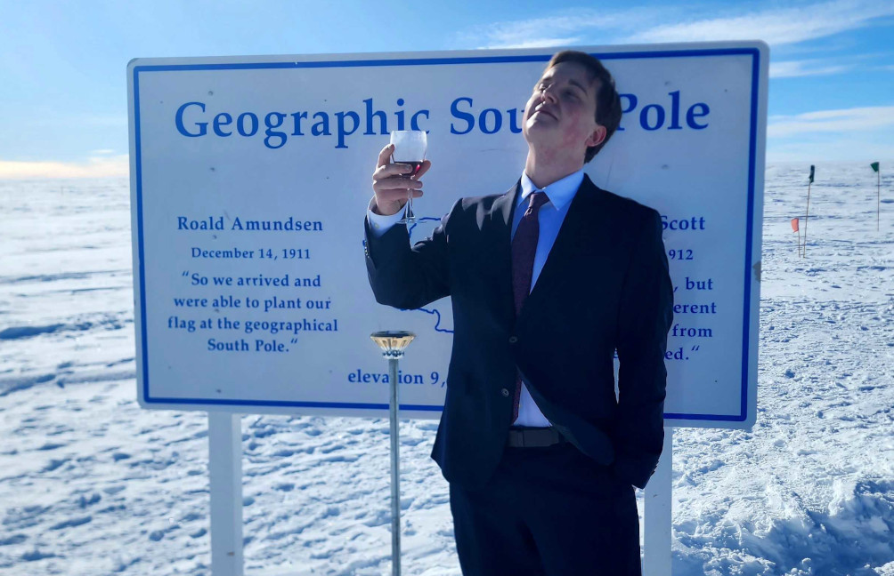
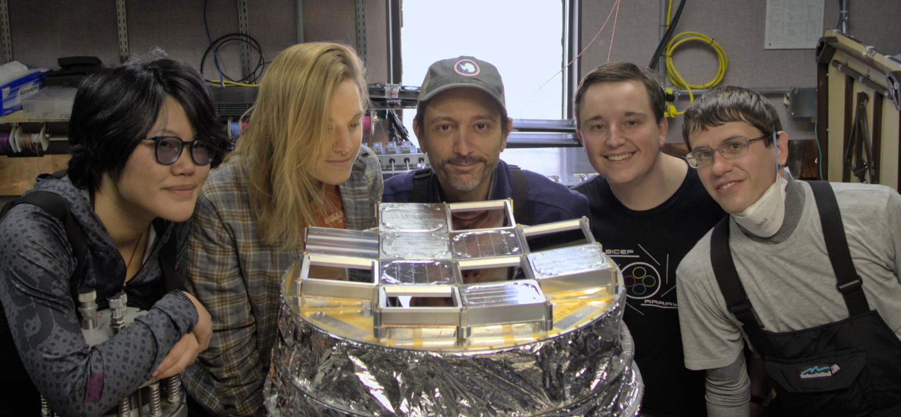
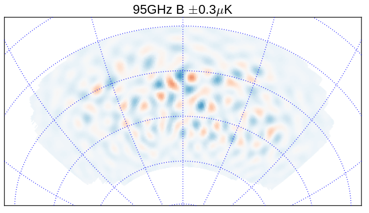
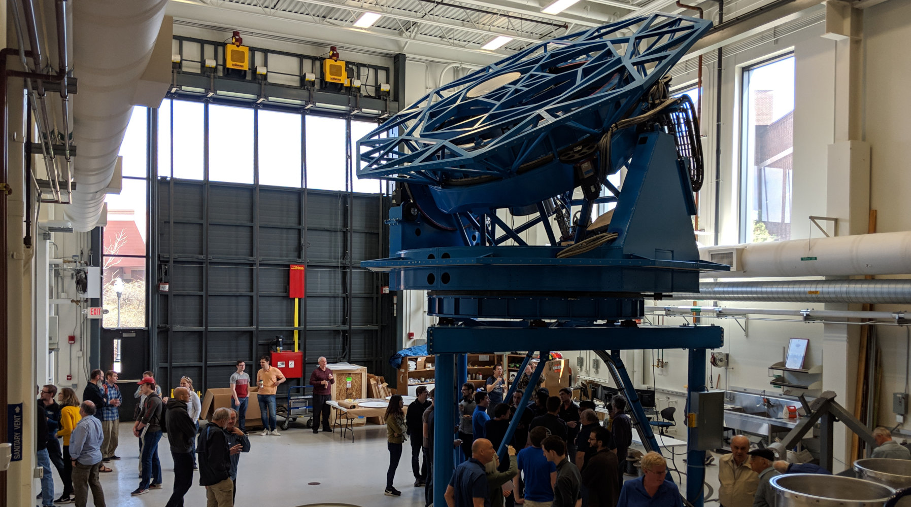

About Me

I'm Jamie, currently a David and Ellen Lee Postdoctoral
Scholar Research Associate in Physics at the California
Institue of Technology (Caltech). I'm an observational
cosmologist interested in studying the physics of the very
beginnings of the Universe through measurements of the
cosmic microwave background (CMB) and of large-scale
structure (LSS). I'm particularly interested in the
intersection of data collection/quality and analysis,
which is becoming increasingly important as datasets grow
and statistical uncertainties shrink.
I completed my undergraduate studies at the University of
Illinois at Urbana-Champaign in 2017, majoring in Physics
and Astronomy with a concentration in computational
physics. While at the University of Illinois, I worked on
the SPT-3G camera for the South Pole Telescope under
Professor Joaquin Vieira. My work in graduate school at the University of
Minnesota's Minnesota Institute for Astrophysics, under
professer Clem Pryke, focused on the BICEP/Keck
series of CMB polarization experiments, which are
searching for the echoes of the Big Bang from the
geographic South Pole. I received my PhD in Astrophysics
in 2024. Since arriving at Caltech, in addition to
continuing work with BICEP/Keck, I have
also joined the SPHEREx (Spectro-Photometer for the
History of the Universe, Epoch of Reionization, and Ices
Explorer) cosmology science team, probing at the Big Bang
from a different direction. More information about my work
may be found on my Research page.
When I'm not thinking about CMB polarization, I like to
play the guitar, read, snuggle with my cat, and hone my
amateur barista skills. I am originally from Nashville,
Tennessee.
Research

A significant aspect of my research involves
observations of the cosmic microwave background (CMB), the
13.8 billion year-old afterglow of the Big
Bang. Fluctuations in this afterglow contain a wealth of
information about the early Universe, with much focus
currently being directed towards the CMB's polarization. A
characteristic parity-odd "B-mode" polarization imprint at
~degree angular scales is a generic prediction of a wide
variety of cosmic inflationary models, being uniquely
generated at the last scattering surface by primordial
gravitational waves (PGW) generated by
inflation. Searching for this B-mode polarization pattern
then facilitates tight constraints on inflation's energy
scale and its possible mechanisms.

I am a member of
the BICEP/Keck
Collaboration, who have published the most sensitive
constraints to date on the amplitude of primordial
gravitational waves: \(\sigma(r)=0.009\), yielding a
constraint \(r_{0.05}<0.036\) (95% C.L.)
(The
BICEP/Keck Collaboration, Phys. Rev. Lett. 127, 151301
(2021)). This was achieved and continues to be
furthered by fielding a series of small-aperture
refracting telescopes at the geographic South Pole to
accumulate data at multiple observing frequencies over
many seasons of stable Polar winter conditions. The use of
small-aperture refractors facilitates tight systematic
error control and mitigation, and provides the flexibility
to enable regular upgrades.
Another significant aspect of my research is the effort to
measure or constrain primordial non-Gaussianity using the
SPHEREx space telescope. The most generic and simple
models of inflation predict that the fluctuations will be
Gaussian — distributed like a regular "bell
curve". Deviations from this simple assumption, for instance,
multiple fields driving the dynamics of inflation, would
cause the spectrum of primordial perturbations to deviate
from this simple Gaussian. These "non-Gaussianities" may
be able to be detected through their influence on the
large-scale clustering of galaxies. SPHEREx will conduct a
novel all-sky spectral survey, enabling the construction
of a "3-D" map of our local Universe with unprecedented
fidelity, which we can use to answer these questions. My
work with SPHEREx focuses primarily on assessing the
impact of systematic errors and effects which could
degrade the non-Gaussianity measurement.
Teaching & Outreach

Engaging the public with real science, providing
transparency about science itself and the scientific
process, and just sharing our wonder for the incredible
Universe we live in are things that have been and remain
quite important to me. In graduate school, I was
consistently involved
with the University of Minnesota's Universe in the Park
program, traveling to local parks around the
Twin Cities to give talks about various topics in
astrophysics and allowing the public to observe through
our portable telescopes. I was also involved in the
inaugural Twin Cities "Astronomy on Tap" event in 2022,
and have given various public talks about CMB cosmology
and Antarctic science. I was the recipient of MIfA's "Best
Outreach" award for Spring 2019.
Engaging with the public is always something I'm
interested in, so please don't hesitate to contact me if
you have opportunities in-mind.
Contact